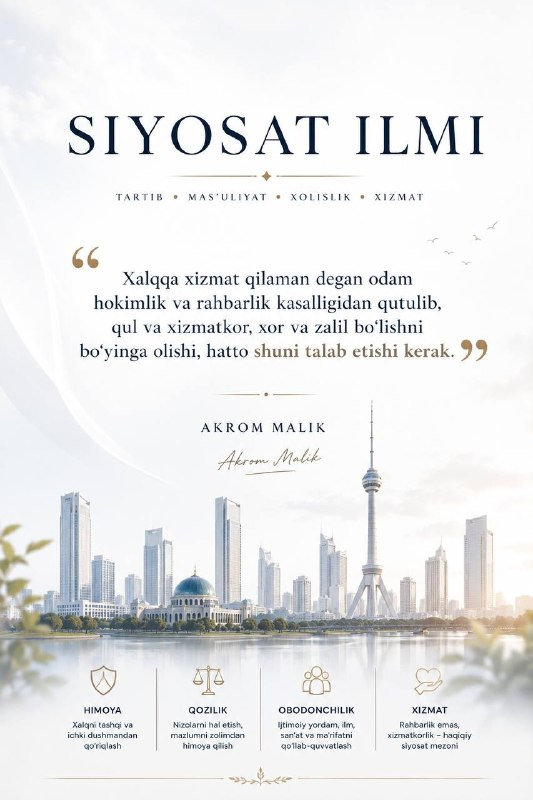

Siyosat haqida har bir odamda aniq va muxtasar ilm bo‘lsa, yaxshi bo‘ladi. Siyosat…

Siyosat haqida har bir odamda aniq va muxtasar ilm bo‘lsa, yaxshi bo‘ladi. Siyosat ilmidan xabardorlik insonni dunyo hayotidagi ko‘p balolardan saqlanishiga sabab bo‘lsa, ajab emas.
Siyosat sayislik so‘zidan olingan. Otboqar arab tilida sayis deyiladi. Otboqar otlarni komil tushunadigan shaxs, ot tilini bilishi lozim. Siyosatchi ham odamlarni – xalqni biladigan va ularni yaxshilik yo‘lida boshqaradigan kishidr.
Har bir erkak rahbar qilib yaratilgan – har bir erkak o‘z oilasida rahbar va siyosatchidir. Xotin-bola-chaqasini to‘g‘ri yo‘ldan yetaklab borish har bir erkakka ham nasib etavermaydi. Shu sababli ham siyosat ilmini bilish kerak.
Davlat siyosati – davlat ishlarini tashkil qilishdir. Davlatning uch asosiy vazifasi mavjud – xalqni tashqi dushmandan qo‘riqlash; ichki dushmandan himoyalash; nizolarni hal etish.
Tashqi dushman – yurtni bosib, elni qul qiladigan bosqinchidir. Uni ichkariga kiritmaslik – davlatning vazifasi. Bosqinchi faqat yer va boyliklarga emas, balki odob-axloq va shon-sharafga ham hujum qiladi.
Ichki dushman – jinoyatchilar: o‘g‘rilar, qotillar va dushman josuslaridir. Mazlumni zolimdan himoya qilish ham shu bandga oiddir.
Nizo – odamlar o‘rtasida paydo bo‘ladigan kelishmovchiliklar, ularga qozilik qilish ham davlatning haqqi.
Davlatning qo‘shimcha ishlari, fazilatlari – obodonchilik, ijtimoiy yordam, adabiyot-san’atni rag‘batlantirish, ilm ahlini qo‘llab-quvvatlash. Davlat o‘zining uch vazifasini komil shaklda bajarsa, qolgan ishlarni xalqning o‘zi bajaradi.
Davlat ishlarini hukumat amalga oshiradi. Hukumat a’zolari odamlardan iborat. Birinchi rahbardan boshlab eng quyidagi amaldorgacha – hammasi hukumat mansubidir. Inson – xatokor. Insonning qarorlari xatodan xoli emas. Demak, davlat va hukumatdan doimo to‘g‘ri ishni kutish va xato sodir bo‘lsa, darhol ayblash aqlga to‘g‘ri kelmaydi. Hukumat o‘z ishini to‘g‘ri bajarishi uchun odamlar yordam berishlari lozim – bu yordamni ilm va ma’rifat ahli bera oladi. Ular davlat ishini yaxshilash uchun odob va axloq ila o‘z fikrlarini bayon qilishadi va rahbarlarga eshittiradilar. Oddiy odamlar zulm va haqsizlik ko‘rsalar, davlat idoralariga borib, qonun asosida o‘z haqlarini talab qilishlari kerak.
Basharti, rahbarlar ilm va ma’rifat ahlidan maslahat so‘ramay, o‘z jaholatlariga ko‘ra xato va zulmda davom etsalar, o‘z hollariga tashlab, sabr bilan kutish kerak. Bu sabr bir necha o‘n yilni talab qilsa ham, kutish kerak. Zolim o‘z boshini o‘zi yeydi, unga qarshi chiqmaslik kerakki, aks holda, jonga va molga ziyon yetadi. Chunki har kimning bu jamiyatda ishi bor, shu ishni o‘z o‘rnida bajarish bilan osoyishtalik hosil bo‘ladi. Boshqaning ishini qilaman deyish insonni dumini yog‘och qisgan maymunning ahvoliga soladi.
Lekin inson hech qachon zulmga rozi bo‘lishi, haqsizlikka ko‘nishi mumkin emas. Har bir inson ko‘zi o‘ngidagi insoniylikka zid harakatlarga qarshi kurashmog‘i oliy burchdir.
Hozirgi kunda siyosiy tahlilchilar toifasi paydo bo‘lyapti. Ular OAV – saytlar va turli platformalarda har kuni yo kun ora o‘zlarini namoyish qilishib, hissiyot va qarashlarini ommaga singdirish harakatidalar. Hech bir samimiy va oqil inson yaxshi niyatli ishga e’tiroz etmaydi, balki himoya qiladi, lekin ko‘zi bir yoqlama – olamni faqatgina 1D o‘lchamda ko‘radigan, G‘arb falsafasi asosida sayoz ilm olgan bu “tahlilchi”lar tahlil emas, tanqid emas, balki murakkab jumlalar konsturksiyasi, har xil yodlangan istilohlar bo‘tqasiga sohibdirlar va bu bo‘tqa konstruksiya ustiga quyilib, ularning noxolislik va adovatlarini yuzaga chiqarmoqda.
Ularning so‘zlariga diqqat qilinsa, har bir yondashuvlari mohiyatan davlat asoslarini zaiflashtirish, hukumat ishlari sifatini buzish hamda xalqning qadimgi madaniy ildizlarini qirqishga qaratilgan. Sababi ular siyosiy tahlilchi emas, siyosiy ambitsiyali odamlardir, ambitsiyasi bo‘lganlarda xolislik hech qachon bo‘lmaydi. Ambitsiyaning mazmuni – sen eplay olmayapsan, men eplayman, o‘rningda men ishlashim kerak degan yashirin hayqiriqdir.
Xolis odam buzmaydi, aksincha, vaziyat murakkabligini hisobga olib, bosiqlik bilan har bir so‘zini taroziga solib, o‘lchab gapiradi; inson nafsining turfa o‘yinlaridan xabari bo‘lgani uchun so‘zning o‘zi bilan hech bir muvaffaqiyatga erishib bo‘lmasligini biladi.
Xalqqa xizmat qilaman degan odam hokimlik va rahbarlik kasalligidan qutulib, qul va xizmatkor, xor va zalil bo‘lishni bo‘yinga olishi, hatto shuni talab etishi kerak. O‘shanday odamda qalb halolligi va so‘zlarida rostgo‘ylik va xolislik bo‘lishi mumkin. Qalbi hokimiyat vasvasasidan ozod inson halovatni his eta oladi.
Qiziq qarama-qarshilik – erkak oila rahbari, ammo ko‘plab erkaklar oila rahbarligidan qochib, ya’ni uy ichida janobi xotinga jamiki ishni – qaror qabul qilish va ijrolarning hammasini topshiradi-da, jamiyat ichida rahbar bo‘laman deb urinadi. Sen nega o‘z ishingni qilmay, boshqaning ishiga burun tiqasan deydigan mard yo‘q.
Akrom MALIK